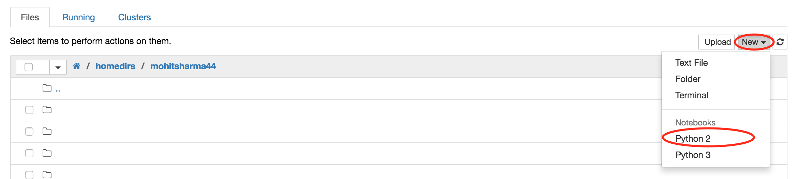
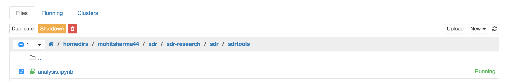

Introduction to Python
Python¶
Python is a great object-oriented, interpreted, and interactive programming language. It is widely used as general-purpose, high-level programming language. It is ranked among the top 5 programming languages in the world. It can be used to create many things including web applications, desktop applications as scripting interpreter and many more. There are no type declarations of variables, parameters, functions, or methods in source code. This makes the code short and flexible, and you lose the compile-time type checking of the source code. Python tracks the types of all values at runtime and flags code that does not make sense as it runs.
Why Ipython Notebook / Jupyter Notebook?¶
The Juputer notebook (successor of Ipython notebook) is a web based interactive computational environment which provides a unique combination of code, shell environment and text. The project (Ipython notebook) started of as a tool to provide above functionalities just for python but has now grown to be language agnostic (Jupyter notebook) supporting over 40 different languages. Simply put, a jupter notebook is a JSON document containing an ordered list of input/output cells which can contain code, text, mathematics, plots and rich media.
Lets get familiar with the Jupyter notebook environment¶
The Jupyter Notebook combines three components:
- The notebook web application: An interactive web application for writing and running code interactively and authoring notebook documents.
- Kernels: Separate processes started by the notebook web application that runs users' code in a given language and returns output back to the notebook web application. The kernel also handles things like computations for interactive widgets, tab completion and introspection. (We don't need to get into specifics of Kernels, just remember that it is the Kernel that is performing all the execution of code and not the browser)
- Notebook documents: Self-contained documents that contain a representation of all content visible in the notebook web application, including inputs and outputs of the computations, narrative text, equations, images, and rich media representations of objects. Each notebook document has its own kernel.
The notebook web application enables users to:
- Edit code in the browser, with automatic syntax highlighting, indentation, and tab completion/introspection.
- Run code from the browser, with the results of computations attached to the code which generated them.
- See the results of computations with rich media representations, such as HTML, LaTeX, PNG, SVG, PDF, etc.
- Create and use interactive JavaScript widgets, which bind interactive user interface controls and visualizations to reactive kernel side computations.
- Author narrative text using the Markdown markup language.
- Build hierarchical documents that are organized into sections with different levels of headings.
- Include mathematical equations using LaTeX syntax in Markdown, which are rendered in-browser by MathJax.
Notebooks consist of a linear sequence of cells. There are four basic cell types:
- Code cells: Input and output of live code that is run in the kernel
- Markdown cells: Narrative text with embedded LaTeX equations
- Heading cells: 6 levels of hierarchical organization and formatting
- Raw cells: Unformatted text that is included, without modification, when notebooks are converted to different formats using nbconvert
Working with Notebook¶
Once you have logged in to the jupyter hub, you should see a dashboard. The dashboard serves as a home page for the notebook displaying the notebooks and files in the current directory.

New Notebook:
Once you navigate to your home directories (from where you have opened this notebook), you can create a new notebook by clicking on New on top right corner and selecting Python 2

Closing, Deleting a Notebook:
The notebooks that are currently open are shown in green icon on dashboard page. The notebooks will remain running until you explicitly shut them down. To do that, check the box next to the notebook that you want to close and observe the controls on top of the notebook. 
- To close the notebook, you can click on the
shutdownbutton - To remove/ delete the notebook you can click on recycle bin next to the shutdown option
Notebook UI¶
Jupyter Notebook has a modal user interface. This means that the keyboard does different things depending on which mode the Notebook is in. There are two modes: edit mode and command mode.
Edit mode:
Edit mode is indicated by a green cell border and a prompt showing in the editor area. When a cell is in edit mode, you can type into the cell, like a normal text editor. To enter the edit mode, navigate to the cell and press Enter

Command Mode:
Command mode is indicated by a grey cell border with a blue left margin. To enter into command mode, press Esc key. This will bring you out of the edit mode

In command mode, the keyboard is mapped to a set of shortcuts that let you perform notebook and cell actions efficiently. Its recommended learning the command mode shortcuts in the following rough order:
- Basic navigation: enter, shift-enter, up/k, down/j
- Saving the notebook: s
- Change Cell types: y, m, 1-6, t
- Cell creation: a, b
- Cell editing: x, c, v, d, z
- Kernel operations: i, 0 (press twice)
This will help speed up your development time.
To know more about keyboard shortcuts, click: Help -> Keyboard Shortcuts
Python Syntax¶
The syntax of the Python programming language is the set of rules that defined how a Python program will be written and interpreted by the system (and by yourself). Python was designed to be a highly readable language. It has uncluttered visual layout and uses English keywords frequently. Python aims towards simplicity and generality in the design of its syntax. In fact Python's syntax guidelines are encapsulated in the mantra "There should be one and preferably only one obvious way to do it". You can read more about it in The Zen of Python.
Indentation¶
Python provides no braces to indicate blocks of code for class and function definition (something we will come across later). Blocks of code are denoted by line indentation. The number of spaces or tabs in an indentation is variable but it is rigidly enforced. For example,
if True:
print 'True'
else:
print 'False'
is indented by 4 spaces and will not generate any error. However an indentation like this
if True:
print 'True'
else:
print 'False'
would generate an Indentation error as seen above
Note: IPython automatically indents your code so you don't have to. However when you write your own code in a regular text editor like notepad, make sure to indent your code.
Note: Cross-platform compatibility note: because of the nature of text editors on non-UNIX platforms, it is unwise to use a mixture of spaces and tabs for the indentation in a single source file. It should also be noted that different platforms may explicitly limit the maximum indentation level.
Thus, if we want to add any more lines in the condition blocks, the lines should all have same level of indentation inside if block or else block.
Multi-line Statements¶
Statements in Python typically ends with a new line. However python allows the use of the line continuation character ( \ ) to denote that the line should continue. For example:
print "Hello \
world"
will print Hello world in single line as show above.
This is an explicit line joining technique Another way to tell python not to end is by putting the strings or variables within the brackets ( ), { }, [ ] without using the line continuation character. For example:
num = ['one', 'two', 'three'
'four', 'five']
num
This technique is known as implicit line joining technique
Note: The different brackets mean different things. We will study about them in later chapters. This is just to demonstrate a way of using multi-line statements.
Quotations¶
You must have seen that in the above examples. we have used single and double quotes. Python accepts single, double and triple (''' or """)quotes to denote string literals. Bear in mind that the start quote and end quote should be of same type. Strings are generally created by using single or double quotes (python treats single and double quotes as the same.) Triple quotes are used when the string literals span across multiple lines. Consider following examples:
name = 'UCSL'
instructor = "Mohit"
description = '''The UCSL at CUSP is a series of online sessions designed to build a
common skillset and familiarity with techniques, concepts, and models for
urban informatics computing. The online sessions focus on data explorations,
programming skills and statistical methods needed for scientific computing
in the field of Urban Informatics.'''
Comments¶
Block¶
Block comments generally apply to some (or all) code that follows them, and are indented to the same level as that code. Each line of a block comment starts with a # and a single space. Paragraphs inside a block comment are separated by a line containing a single #.
# This is an
# example of a
# Block comment
Inline¶
An inline comment is a comment on the same line as a statement. Inline comments should be separated by at least two spaces from the statement. They should start with a # and a single space. Inline comments are unnecessary and in fact distracting if they state the obvious.
x = 100 # Such inline comments are unnecessary
Docstrings¶
Every function that you write should be accompanied with a Docstring that tells about the function.
Docstrings are written between a triple quote (""" ...< docstring >...""").
def my_func():
"""
This function will
perform .....
"""